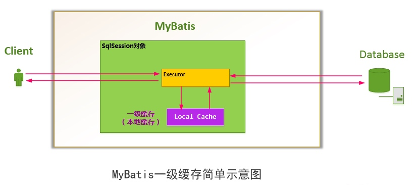

MyBatis缓存机制
关于Mybatis
MyBatis可以使用简单的XML或注解用于配置和原始映射，将接口和Java的POJO（Plain Old Java Objects，普通的Java对象）映射成数据库中的记录。
一、为什么需要缓存
提高对数据库查询的效率，提高应用的性能。
二、MyBatis缓存机制整体设计
MyBatis缓存分为一级和二级，使用顺序：
二级缓存 —> 一级缓存 —> 数据库

三、MyBatis 一级缓存
1、什么是一级缓存

对于会话（Session）级别的数据缓存，称之为一级缓存。
2、一级缓存的生命周期
MyBatis在开启一个数据库会话时，会创建一个新的SqlSession对象，SqlSession对象中会有一个新的Executor对象，Executor对象中持有一个新的PerpetualCache对象；当会话结束时，SqlSession对象及其内部的Executor对象还有PerpetualCache对象也一并释放掉。- 如果
SqlSession调用了close()方法，会释放掉一级缓存PerpetualCache对象，一级缓存将不可用； - 如果
SqlSession调用了clearCache()，会清空PerpetualCache对象中的数据，但是该对象仍可使用； SqlSession中执行了任何一个update操作(update()、delete()、insert()) ，都会清空PerpetualCache对象的数据，但是该对象可以继续使用；
3、一级缓存工作流程
- 对于某个查询，根据
statementId,params,rowBounds来构建一个key值，根据这个key值去缓存Cache中取出对应的key值存储的缓存结果； - 判断从
Cache中根据特定的key值取的数据数据是否为空，即是否命中； - 如果命中，则直接将缓存结果返回；
如果没命中：
- 去数据库中查询数据，得到查询结果；
- 将key和查询到的结果分别作为
key,value对存储到Cache中； - 将查询结果返回；
结束。
4、一级缓存性能分析
MyBatis对会话（Session）级别的一级缓存设计的比较简单，就简单地使用了HashMap来维护，并没有对HashMap的容量和大小进行限制。一级缓存是一个粗粒度的缓存，没有更新缓存和缓存过期的概念
四、MyBatis二级缓存
1、二级缓存工作模式
当开一个会话时，一个SqlSession对象会使用一个Executor对象来完成会话操作， MyBatis的二级缓存机制的关键就是对这个Executor对象做文章。如果用户配了cacheEnabled=true，那么MyBatis在为SqlSession对象创建Executor对象时，会对Executor对象加上一个装饰者：CachingExecutor，这时 SqlSession使用CachingExecutor对象来完成操作请求。CachingExecutor对于查询请求，会先判断该查询请求在Application级别的二级缓存中是否有缓存结果，如果有查询结果，则直接返回缓存结果；如果缓存中没有，再交给真正的Executor对象来完成查询操作，之后CachingExecutor会将真正Executor返回的查询结果放置到缓存中，然后在返回给用户。
2、二级缓存划分
MyBatis并不是简单地对整个Application就只有一个Cache缓存对象，它将缓存划分的更细，即是Mapper级别的，即每一个Mapper都可以拥有一个Cache对象，具体如下：
- 为每一个
Mapper分配一个Cache缓存对象（使用<cache>节点配置）； - 多个
Mapper共用一个Cache缓存对象（使用<cache-ref>节点配置）；
要想使某条Select查询支持二级缓存，你需要保证：
MyBatis支持二级缓存的总开关：全局配置变量参数cacheEnabled = true- 该
select语句所在的Mapper，配置了<cache>或<cached-ref>节点，并且有效 - 该
select语句的参数useCache = true
3、二级缓存生命周期
二级缓存是Application应用级别的缓存，它的是生命周期很长，跟Application的声明周期一样，也就是说它的作用范围是整个Application应用。
4、二级缓存禁用与刷新
useCache = "false"可以禁用二级缓存，默认select语句useCache = "true"
flushCache = "false"即不会刷新缓存，默认flushCache = "true"
5、Mybatis Cache参数
lushInterval（刷新间隔）可以被设置为任意的正整数，而且它们代表一个合理的毫秒形式的时间段。默认情况是不设置，也就是没有刷新间隔，缓存仅仅调用语句时刷新。
size（引用数目）可以被设置为任意正整数，要记住你缓存的对象数目和你运行环境的可用内存资源数目。默认值是1024。
readOnly（只读）属性可以被设置为true或false。只读的缓存会给所有调用者返回缓存对象的相同实例。因此这些对象不能被修改。这提供了很重要的性能优势。可读写的缓存会返回缓存对象的拷贝（通过序列化）。这会慢一些，但是安全，因此默认是false。
如下例子：
<cache eviction="FIFO" flushInterval="60000" size="512" readOnly="true"/>
这个更高级的配置创建了一个FIFO缓存,并每隔60秒刷新,存数结果对象或列表的512个引用,而且返回的对象被认为是只读的,因此在不同线程中的调用者之间修改它们会导致冲突。可用的收回策略有, 默认的是`LRU:
LRU – 最近最少使用的：移除最长时间不被使用的对象。
FIFO – 先进先出：按对象进入缓存的顺序来移除它们。
SOFT – 软引用：移除基于垃圾回收器状态和软引用规则的对象。
WEAK – 弱引用：更积极地移除基于垃圾收集器状态和弱引用规则的对象。
6、二级缓存的局限性
Mybatis的二级缓存区域以mapper为单位划分，当一个商品信息变化会将所有商品信息的缓存数据全部清空，而无法实现当一个商品变化时只刷新该商品的缓存信息而不刷新其它商品的信息，解决此类问题需要在业务层根据需求对数据有针对性缓存。